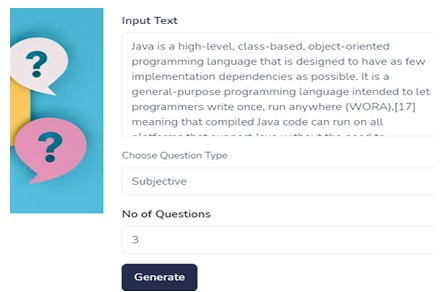

Automatic Question Generation from Textual data using NLP techniques

Jan 2024 - Feb 2024
Abstract
In this world of ever-growing technology, humans have tried to develop systems to make their work as easy as possible. The education sector is no exception to this, as we have been introduced to many Ed-tech systems, and can access any information or course with the help of our smartphones. Carrying out educational activities is not an easy task. There are many things to manage or be taken care of by professors. To reduce the workload of the professors, we have developed a Web Application to generate automatic questions based on the data being provided to the system. This will not only make the jobs of professors easier but will also allow them to process a huge educational syllabus and generate any type of questions using that data.